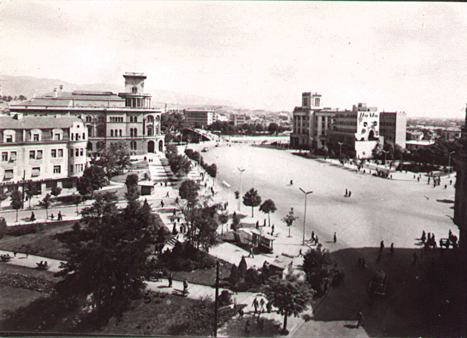
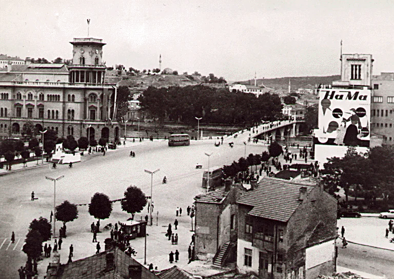

Kutlama - meydan
- Senaryo
- Aco Petrovski ve Aki Pavlovski
- Yönetmen
- Trajče Popov
- Kameraman
- Kiro Bilbilovski ve Trajče Popov
- Yıl
- 1949
- Süre
- 00:19

19. yüzyılın ortalarında fotoğraflanmış Üsküp şehir meydanı.

19. yüzyılın sonunda Üsküp. Burmalı Camii ve çevresinde yapılmış birkaç binayla meydan. Düzenlenmemiş bir sokak. Öküz arabalı arabacıların toplanma yeri.

19. yüzyılın sonu ve 20. yüzyılın başında meydan. Ön planda fayton ve araba durağı. Sağda iki sıra bina Taş Köprü'ye kadar uzanıyor. Arkalarında Burmalı Camii. Solunda evler, hemen arkalarında bankanın bir bölümü görülüyor. Arka planda kışlalarıyla Üsküp Kalesi yükseliyor.

19. yüzyılın sonu ve 20. yüzyılın başında meydan. Ön planda fayton ve araba durağı. Sağda tüccar ve zanaatkâr dükkânlarının bulunduğu iki sıra bina Taş Köprü'ye kadar uzanıyor. Sollarında yanına evler yapılmış Burmalı Camii. Arka planda kışlalarıyla Üsküp Kalesi yükseliyor.

Balkan Savaşları sırasında Üsküp. Fayton duraklı Burmalı Camii. Sağında, Taş Köprü girişinin iki yanında tüccar dükkânlarının ve zanaatkârların bulunduğu binalar. Ön planda ayakkabı boyacıları ve askerler. Sokakta yağmur suyu için açık kanallar var.

Taş Köprü'nün önündeki meydanın bir bölümü (Balkan Savaşı sırasında). Sokaklar henüz döşenmemiş. Soldaki bina, Taş Köprü'nün önünde iki sıra halinde yapılan, tüccar ve zanaatkâr dükkânlarının bulunduğu binalardan biri. 1920 civarında yıkıldılar.

Üsküp, 1920 civarı. Taş Köprü'nün önündeki şehir meydanının bir bölümü. Özellikle çatılarında kendine özgü mimari ayrıntılara sahip, gelip geçenler ve satış için ilk büfeler. Köprü yaya yollarıyla genişletilmiş.

Üsküp, 1920 civarı. Düzenlenmiş bir şehir meydanı: duvarla çevrili yeşil bir alan, döşenmiş yüzeyler, bordürlü kaldırımlar. Nehre ve şehir kalesine açık manzaralı, belirgin bir Taş Köprü girişi. Kentliler ve dönemin toplu taşıması faytonlar koşuşturuyor.

Üsküp, 1920 civarı. Düzenlenmiş bir şehir meydanı: duvarla çevrili yeşil bir alan, döşenmiş yüzeyler, bordürlü kaldırımlar. Nehre ve şehir kalesine açık manzaralı, belirgin bir Taş Köprü girişi. Kentliler ve dönemin toplu taşıması faytonlar koşuşturuyor.

Birinci Dünya Savaşı'ndan sonra, şehir meydanı düzenlenmeye başlarken Üsküp. Burmalı Camii'nin arkasındaki, Taş Köprü'nün önündeki binalar yıkılmış. Köprünün yaya yollarında yeni korkuluk var. Arka planda Vardar'ın sol kıyısında Pajko mahallesinin bir bölümü.

Birinci Dünya Savaşı'ndan hemen sonra Üsküp. Ristić Sarayı yapılmadan önce şehir meydanı: geleneksel mimarinin dağınık dokusu. Tam karşıda dönemin tren garına giden ana cadde. Yarı yolda solda bugünkü "11 Ekim" Caddesi.

Üsküp, 1920'ler. Güneyden şehir meydanı, sağda Ristić Sarayı'nın bir bölümü. Solda "Sarajevo" oteli, "Obedinuvanje" oteli ve "Marger" kahvehanesi. Ana cadde boyunca çok sayıda yeni yapı ve dükkân.

Meydan, 1920'ler. Ön planda (Subaylar Evi'nin önünde) fayton durağı; arka plana eczacı Ristić'in, halk arasında Ristić Sarayı denen binası hâkim.

Üsküp 1930 civarı. Güneyden şehir meydanı; ön planda Ristić Sarayı ve kereste deposu. Ana cadde boyunca çok sayıda yeni yapı ve dükkân.

Üsküp, 1930 civarı. Ristić Sarayı ile şehir meydanının bir bölümü. Sağda inşaat malzemesi satılan kereste deposunun çiti görülüyor.

Makedonya Meydanı'nın havadan fotoğrafı. (1920'ler)

Ristić Sarayı ile meydanın bir bölümü (1930'lar)

Meydanın bir bölümü ve Ristić Sarayı. Sol altta pazar ve bayram günleri çalan askeri bando için üstü örtülü bir platform. En sağda uzakta "Balkan" değirmeni. (1930'lar)

Üsküp 1930 civarı. Ön planda Ristić Sarayı ve kereste deposuyla şehir meydanı. Ana cadde boyunca çok sayıda yeni yapı ve dükkân.

Üsküp 1930 civarı. Ristić Sarayı yapıldıktan sonra güneyden şehir meydanı; ön planda kereste deposu. Ana cadde boyunca çok sayıda yeni yapı ve dükkân.

Üsküp 1930 civarı. Ristić Sarayı yapıldıktan sonra güneyden meydanın bir bölümü; ön planda kereste deposu ve binalar ile dükkânlarla dolu tren garına giden ana cadde.

Meydanın bir bölümü, arka planda Subaylar Evi
- 1920'ler.

1927 civarında meydan. Taş Köprü'ye güneyden yaklaşım. Arkada solda Milli Tiyatro ve Üsküp Kalesi görülüyor.

1927 civarında meydan. Taş Köprü'ye güneyden yaklaşım. Ön planda yazın film gösterilen sinema terası var.

Üsküp, 1925 civarı. Taş Köprü'nün önündeki şehir meydanının bir bölümü. Özellikle çatılarında kendine özgü mimari ayrıntılara sahip, gelip geçenler ve satış için ilk büfeler. Köprü yaya yollarıyla genişletilmiş. Arka planda solda Milli Tiyatro ve Üsküp Kalesi. Ön planda sinema terası yıkılıyor; yerine Milli Banka yapıldı.

1926 civarında meydan. Düzenlenmiş bir şehir meydanı: duvarla çevrili yeşil bir alan, döşenmiş yüzeyler, bordürlü kaldırımlar. Yeşil alanın yanında fayton durağı, hemen yanında otomobil ve taksi otoparkı vardı. Sağda lokantalar ve oteller. Tam karşıda Yahudi ve Pajko mahallelerinin bir bölümüyle Taş Köprü. Fotoğrafın solunda inşa halindeki Subaylar Evi.

Meydan, 1920'lerin ikinci yarısı. Düzenlenmiş bir şehir meydanı: duvarla çevrili yeşil bir alan, döşenmiş yüzeyler, bordürlü kaldırımlar. Yeşil alanın yanında fayton durağı vardı. Sağda lokantalar ve oteller. Solda hâlâ inşa halindeki Subaylar Evi. Arka planda Yahudi ve Pajko mahallelerinin bir bölümüyle Taş Köprü.

Üsküp şehir meydanı - 1920'ler. Subaylar Evi'nin önünde motorlu taksi durağı vardı, ama faytonlar hâlâ kentlilerin ulaşım aracıydı.

Meydanın tamamı - 1920'lerin sonu. Subaylar Evi'nin önünde motorlu taksi durağı vardı, ama faytonlar hâlâ kentlilerin toplu ulaşım aracıydı.

"Sarajevo" oteli ve Üsküplülerin sevdiği ünlü "Marger" kahvehanesiyle meydan. "Sarajevo" otelinin solunda "Obedinuvanje" oteli vardı. Ön planda kaldırımda bir simitçi oturuyor. (1935 civarı)

"Sarajevo" oteli ve Üsküplülerin sevdiği ünlü "Marger" kahvehanesiyle meydan. "Sarajevo" otelinin solunda "Obedinuvanje" oteli vardı. Solda Taş Köprü'ye güneyden yaklaşım - 1920'ler.

Milli Banka, inşa halindeki Ticaret Odası ve Osmanlı Bankası ile Pajko mahallesinin bir bölümüyle meydan. Ticaret Odası'nın önünde oteller ve "Marger" kahvehanesi (yıkılmadan önce). (1930'lar)

Taş Köprü'nün güney girişindeki anıtlarla meydanın bir bölümü. - 1930'lar

Meydanın Taş Köprü'ye doğru bir bölümü. Köprünün girişinde, iki yüksek mermer kaide üzerinde iki atlı (heykeltıraş Antun Augustinčić'in eseri) duruyor. Meydana bir çeşme de yapıldı. Solda Milli Tiyatro, Üsküp Kalesi ve Yahudi mahallesinin bir bölümü. (1930 civarı)

Milli Banka ve Ticaret Odası ile meydanın bir bölümü. (1930'lar)

1950'lerde Üsküp şehir meydanı, arka planda eski postane, solda tabiat tarihi müzesi.

Meydan, 1950'ler. Soldaki ilk bina, merkez eczanesi ve başka dükkânların bulunduğu "Macura" diye bilinen bina. Arka planda Subaylar Evi, Milli Banka ve Taş Köprü. Ön planda, eskiden kereste deposunun olduğu yerde güzel düzenlenmiş bir park.

1950'lerde Üsküp şehir meydanı, solda "Makedonija" oteli.

1950'lerde meydan.

1950'lerde meydan.

Subaylar Evi ile meydanın bir bölümü, arka planda Milli Tiyatro ve Üsküp Kalesi. (1950'ler)

Meydanın Taş Köprü'ye doğru bir bölümü. Solda Subaylar Evi, sağda Milli Banka ve Ticaret Odası. İlk ve son durakları meydanda olan şehir otobüsleri (tek ve çift katlı). (1950'ler)

1950 civarında Üsküp şehir meydanı. Solda Subaylar Evi, sağda Ticaret Odası ile Milli Banka. Aralarında Taş Köprü, karşı tarafta banka binaları ve İbni Pajko.

Meydan - 1950'ler

Meydan, 1970'ler. Taş Köprü'ye, "İbni Pajko" binasına ve banka kompleksine bakış. O yıllarda meydan otopark olarak kullanılıyordu.

Meydanın bir bölümü, 1970'ler, Ristić Sarayı ve "Goce Delčev" Caddesi'ndeki binalarla.

 Su kemeri4 kartpostal
Su kemeri4 kartpostal Kale30 kartpostal
Kale30 kartpostal Köprüler60 kartpostal
Köprüler60 kartpostal Rıhtım58 kartpostal
Rıhtım58 kartpostal Meydan46 kartpostal
Meydan46 kartpostal Binalar66 kartpostal
Binalar66 kartpostal Hristiyan kiliseleri19 kartpostal
Hristiyan kiliseleri19 kartpostal İslami yapılar33 kartpostal
İslami yapılar33 kartpostal Subaylar Evi29 kartpostal
Subaylar Evi29 kartpostal Tiyatro28 kartpostal
Tiyatro28 kartpostal Tren garı13 kartpostal
Tren garı13 kartpostal Okullar36 kartpostal
Okullar36 kartpostal Parklar12 kartpostal
Parklar12 kartpostal Pazarlar18 kartpostal
Pazarlar18 kartpostal Sokaklar38 kartpostal
Sokaklar38 kartpostal Panorama I60 kartpostal
Panorama I60 kartpostal Panorama II30 kartpostal
Panorama II30 kartpostal Kolajlar55 kartpostal
Kolajlar55 kartpostal Seller9 kartpostal
Seller9 kartpostal Deprem27 kartpostal
Deprem27 kartpostal Üsküp 200026 kartpostal
Üsküp 200026 kartpostal